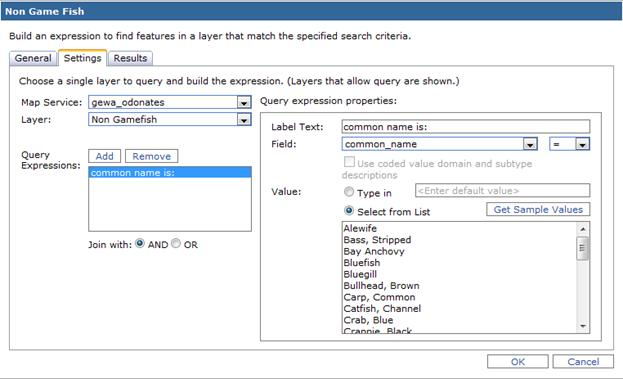

Commercial Web Delivery
Commercial Web Delivery enables distribution of information document using web based framework. A wide range of applications can be viewed using web browser.
Benefits of web delivery for GIS
ArcGIS Server
Incorporating services
Query and display
Geoprocessing services
Interactive geoprocessing services
ArcGIS.com
Incorporating services
Benefits of Web Delivery for GIS
Easy distribution: web delivery is the appropriate way to reach the target customers without spending resources.
Interactivity: By creating your own maps and publish through web delivery, user can easily navigate among the different levels of detail you are going to present.
Can be updated easily: the web maps can be updated easily, making them representative that one should possess.
Multi-functionality: Apart from providing basic geographical information of different places, it also include other features such as population for graphical presentation of geographical data in numeric values using colors.
ArcGIS Server
ArcGIS Server allows you to share your GIS resources across an enterprise and across the web. GIS resources are the maps, globes, address locators, geodatabases, and tools that you want to share with others.
Incorporating Services
A developer uses ArcGIS Server Manager to create services and web applications.
1. First create the map document (.mxd or .msd file) using the ArcMap.
2. After creating .mxd or .msd file, publish this file as GIS resource in ArcGIS Server Manager.
3. Now create a web application to allow the user to add layers, some query and geoprocessing tasks.
Query and Display
The query and display application allows the user to select attribute values and have a task in the application return records matching those values. The tables used in the query are built into the map document and associated with the web application via a service.
1. Adding a query task to the web application.
2. Configuring the task to find features in the layer that match the specified search criteria.

3. Query task by selecting the specific attribute value from the dropdown list.
4. The results are shown in the left pane and can view all the additional information by clicking on the pop upped flags.
Geoprocessing Services
Geoprocessing is for everyone that uses ArcGIS. The fundamental purposes of geoprocessing are to allow you to automate your GIS tasks and to perform spatial analysis and modeling. Geoprocessing supports the automation of workflows by providing a rich set of tools and a mechanism to combine a series of tools in a sequence of operations using models and scripts.
The foremost step for geoprocessing web application is to create a map document with the layers and features of interest. Also have to create a model which performs the geoprocessing. 4. Select the geoprocessing task and enter the appropriate parameter to perform an operation on an existing feature.
1. A map document for geoprocessing web application.
2. A model for geoprocessing web application.
3. Creating a service and a web application. Adding a geoprocessing task to the web application referencing the service.
5. The results can be viewed in the updated map.
Interactive Geoprocessing Services
Many geoprocessing services allow you to interactively create features and row of data as input using the interactive feature and record input controls. With the interactive feature input control, you can add input features by clicking your mouse on the map display in ArcMap. The types of features that can be entered (points, lines, or polygons), as well as the attributes of the features or records, are controlled and documented by the tool author.
You can add datasets to a geodatabase by importing them from other locations or by converting (and importing) them from other data formats. When you import data that is in a format not used by the geodatabase, ArcGIS automatically converts it into data types used by the geodatabase.
1. Import data or schema from an XML document into ArcSDE geodatabase.
2. Create a map document from imported layers and create a model tool to allow interactive input. To enable interactive entry of features, you need a model variable with the feature set data type.
3. Map document with model outputs.
4. Creating a web application using ArcGIS Server Manager and adding a geoprocessing task.
5. Select the Interactive geoprocessing task and a dialog box will pop-up. Click the Add feature button and then click in the display to start drawing the polygon in the display. Each polygon feature is added to the feature list on the tool's dialog box. Also enter the appropriate parameter to perform an operation on the selected feature.

6. Resulting Web Application using geoprocessing task.
ArcGIS.com
ArcGIS.com is a new Web site designed as a fundamental part of the ArcGIS system. The site provides a gateway to your online GIS experience, and is intended be a useful destination for anyone – GIS professionals, Web developers, and those that want to view maps, or create their own maps, simply and quickly. The site and its resources are published in the Amazon cloud, and represent a free set of cloud services for the ArcGIS system.
(Source:
http://events.esri.com/uc/QandA/index.cfm?fuseaction=answer&conferenceId=2F6DC1A1-1422-2418-883C3868A9004888&questionId=3205 )
Incorporating Services
1. Adding ArcGIS services and layers from ArcGIS online.
2. Configuring Pop – up to allow users to identify features on the map.
3. Creating an editable layer.
Reflection
The work related to deliver GIS information through web based frame work was totally new for me. It was quite challenging but interesting also. We used ArcGIS server and ArcGIS.com to complete various task.
The layers can be added from GIS tool to web page for accessing GIS information from website. Not necessarily, person should know GIS tools to get GIS information. Skilled persons can use GIS tools, develop GIS layers and can launch through the web page. Now I understand different components of commerical web delivery to deliver GIS layers using web framework.